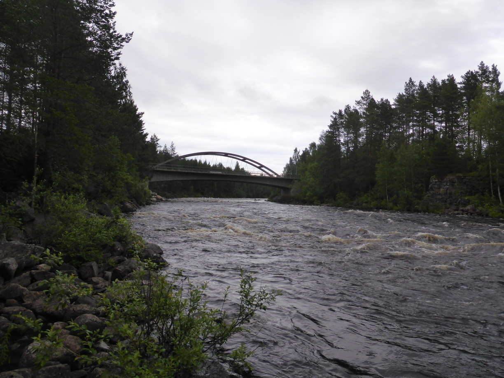
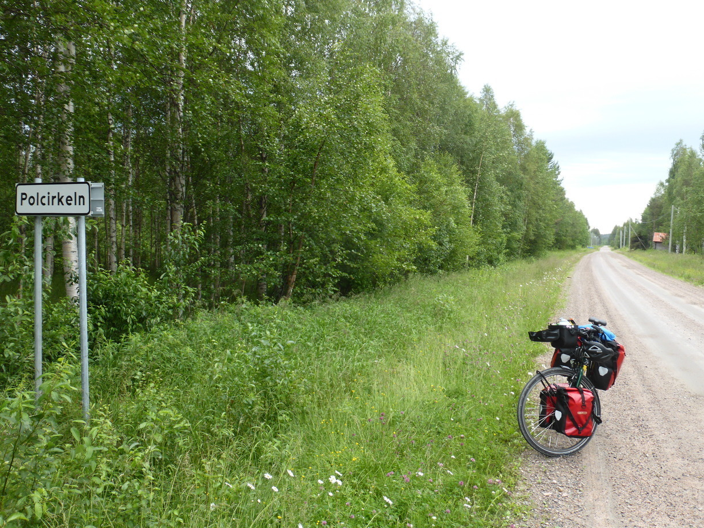
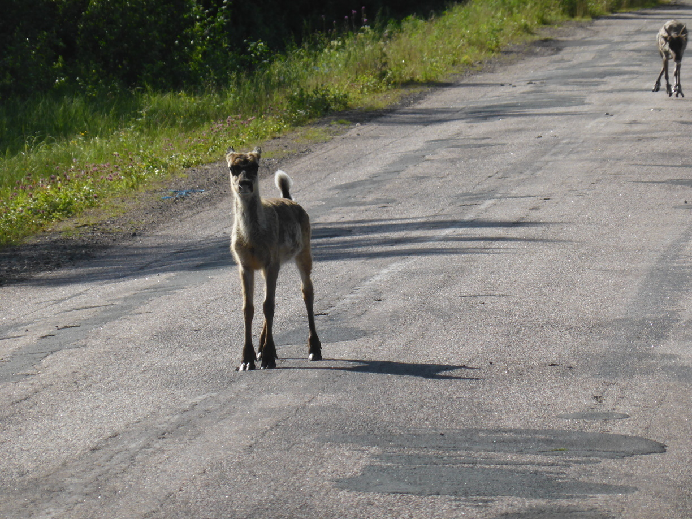

Polarkreis, Rentiere und ne Frisbee Posted on July 10, 2016
Tag 41
Älvsbyn - Lassby 87 km
Die meiste Zeit war es trocken, sodass ich ein wenig besser voran kam als am Vortag.
Wenn man denkt man hat alle Warnschilder gesehen
Am Nachmittag nahm verließ ich den Sverigeleden, da 5 Kilometer abseits ein Badeplatz ausgeschildert war. Dieser war nicht ganz nach meinem Geschmack, da es keine Toilette gab und man dem Wind schutzlos ausgeliefert war. Also fuhr ich auf einem anderen Weg zurück in Richtung des Sverigeleden. Dort kam ich durch Zufall direkt an einem Rastplatz am Råne Älv vorbei, wo ich dann mein Zelt aufschlug. 
Tag 42
Lassby - Jockfall 134 km
Ich hatte mir auf der Karte den Ort Jockfall ausgesucht, da er nördlich des Polarkreises liegt und einen Wasserfall zu bieten hat. Zunächst ging es nach Överkalix. Dort trifft der Ängesån auf den Kalix Älven, welche beide gut Wasser führten.
Ängesån
Överkalix
Nach einer kurzen Pause in Överkalix ging es entlang des Kalix Älven flußaufwärts. Dort überquerte ich den Polarkreis. 
Kurze Zeit später sah ich natürlich schon das erste Rentier.
Und darauf eine ganze Herde. Der Chef trug eine Kuhglocke um den Hals. Als ich mit dem Fahrrad angefahren kam lief die Herde noch für einen Augenblick vor mir entlang der Straße bis sie dann im Wald verschwanden.
In Jockfall gab es dann noch den Wasserfall zu bewundern. Aber ich wollte viel lieber erstmal am Campingplatz duschen und was Essen. Also bin ich am späten Abend nochmal zum Wasserfall gelaufen um ein paar Photos zu machen.
Tag 43
Jockfall - Uumaa 75 km
Von Jockfall bis Uumaa sind es 30 Kilometer Luftlinie. Leider verläuft entlang dieser keine Straße. Also fuhr ich über Korpilombolo. Nördlicher werde ich voraussichtlich nicht kommen. Am Ende kam ich an einen sehr schönen Angeplatz mit allen Annehmlichkeiten. Es brannte sogar nich ein Feuer in der Feuerstelle. Leider fing es an zu regnen als ich gerade am kochen war. Es gab aber genug Möglichkeiten zum unterstellen. Der Regen war auch schnell vorbei und am Feuer konnte ich alles trocknen. 
Tag 44
Uumaa - Tornio 100 km
Auf dem Weg nach Övertorneå stellten sich mir nochmals ein paar Rentiere in den Weg.  In Övertorneå angekommen ging es dann über die Brücke nach Finnland. Bis nach Tornio ging es entlang der E8 die teilweise recht stark befahren war. Im Nachhinein wäre ich besser bis Tornio auf der schwedischen Seite geblieben. Immerhin hab ich bei einer Rast eine Frisbee im Fluß gefunden. Ich weiß zwar nicht was ich damit anfangen soll und wie ich sie transportieren soll, aber was solls.